EPG3308: Computación Estadística
Clase 01: Introducción a R
Profesor: Hernán Robledo Araya (harobledo@uc.cl)
Ayudante: Josefa Silva Muñoz (josefa.silva@alumni.uc.cl)
Primer Semestre - 2025
¡Bienvenidos al Magíster en Estadística!
¡Y al Curso de Computación Estadística!
EPG3308 Computación Estadística
Hernán Robledo Araya
Josefa Silva Muñoz
¿Computación Estadística?
Aprender a utilizar un Programa para realizar Análisis Estadísticos.
Metodología de Aprendizaje
- Asistir a clases.
- Participar de las actividades en clases para practicar.
- Prepararse para rendir laboratorios con mínimo apoyo.
- Realizar tareas desde la casa con todo el material disponible.
Computación
Estadística
En Estadística,
- Recolectamos datos
- Organizamos datos
- Analizamos datos
- Interpretamos datos
- Inferimos sobre los fenómenos
¿Para qué?
Tomar Decisiones
¡Necesitamos un programa para hacer todo esto!
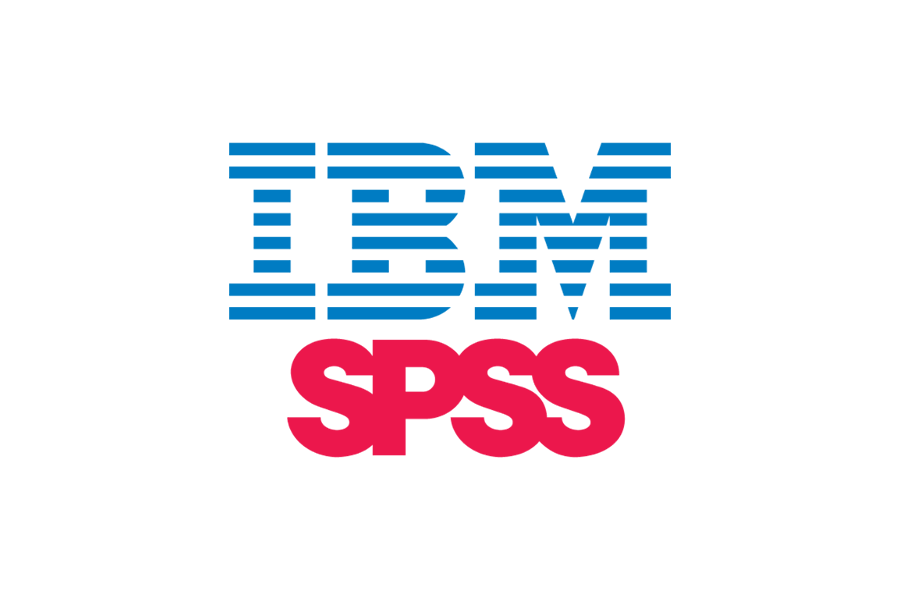 


En este curso veremos:

R es un Lenguaje de Programación diseñado específicamente para análisis estadístico.
Glosario de Programación
Programación: Acción y efecto de programar.
Programar: Proceso de crear instrucciones para un computador de modo que este ejecute las instrucciones establecidas.
Lenguaje de Programación: dialecto específico utilizado para programar.
- En Chile se habla español, como en R se habla en lenguaje… ¡R!
- El lienzo donde el programador escribe sus instrucciones es denominado Código o Script.
Sintaxis: son las reglas del lenguaje de programación sobre cómo estructurar las palabras de este lenguaje para que sea funcional.
Dinámica de Programación
- Humano escribe código,
- Humano entrega código al programa (R en este caso),
- Programa ejecuta las instrucciones correctamente.
- Humano es feliz 😁
- Programa ejecuta las instrucciones correctamente.
- Humano entrega código al programa (R en este caso),
Dinámica Realista de Programación
- Humano escribe código,
- Humano entrega código al programa,
- Programa lo rechaza por contener errores de escritura,
- Humano entrega código corregido,
- Programa vuelve a rechazar ,
- Humano entrega código corregido,
- Programa vuelve a rechazar ,
- Humano entrega código corregido,
- Programa vuelve a rechazar ,
- Humano entrega código corregido,
- Programa vuelve a rechazar ,
- Humano entrega código corregido,
- Programa vuelve a rechazar ,
- Humano entrega código corregido,
- Programa vuelve a rechazar ,
- Humano entrega código corregido,
- Programa lo rechaza por contener errores de escritura,
- Humano entrega código al programa,
Ejemplo de un código en R
¿Qué hará este código?
¿Por qué usar R?
- Es gratis.
- Liviano y disponible en múltiples plataformas.
- Flexibilidad para construir procesos complejos.
- Rápido y eficiente en ejecutar sus tareas.
- Programa de Código abierto.
- Herramientas básicas y avanzadas para manipulación de datos.
- Herramientas básicas y avanzadas para estadística.
- Comunidad construye nuevas librerías.
- Poderosas herramientas gráficas.
¿Cómo se aprende a programar en u otro lenguaje?
- Aprendiendo la sintaxis y el dialecto del lenguaje de programación.
- Familiarizándonos resolviendo tareas sencillas.
- Resolviendo problemas interesantes.
- ¡Equivocándonos mil y un veces!
Corregir los errores enseña más que cien cursos
Hoy aprender a programar es más fácil que nunca


¿Por qué usar R y no Python, o Julia, u otro lenguaje?
- Python requiere librerías extras para algunos procedimientos estadísticos básicos.
- R dispone de métodos estadísticos avanzados:
- Modelos Lineales Generalizados
- Análisis de Series de Tiempo
- Métodos Bayesianos
Nota
Python o Julia siguen siendo excelentes opciones para estadística clásica.
Instalar
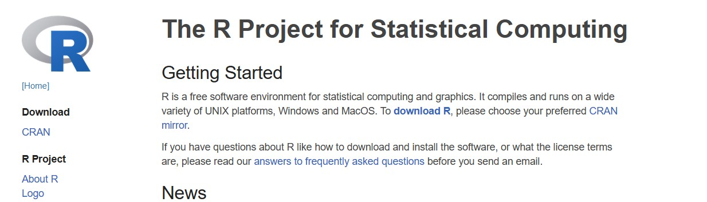
Escoger el repositorio chileno para descargar R.
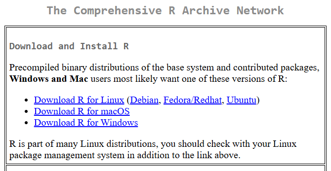
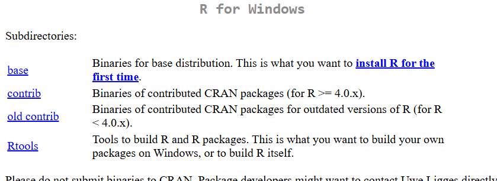
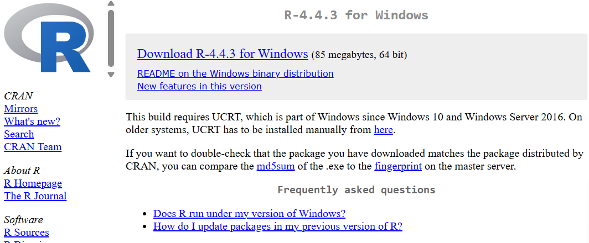
- Tras la descarga, instalar programa dejando opciones por defecto.
- En macOS, el procedimiento es equivalente.
- Para abrir R, ingresar R 4.3 en el buscador.
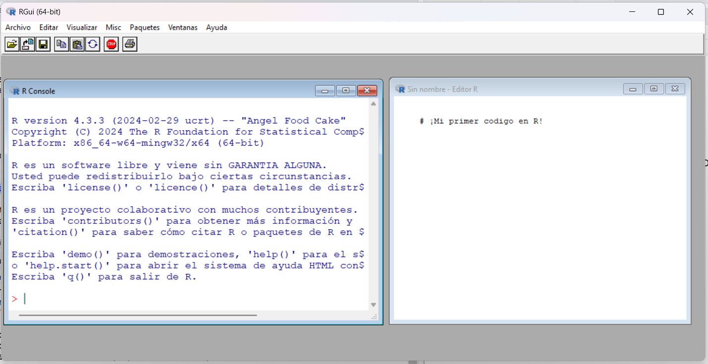
Interfaz Gráfica mejorada para R


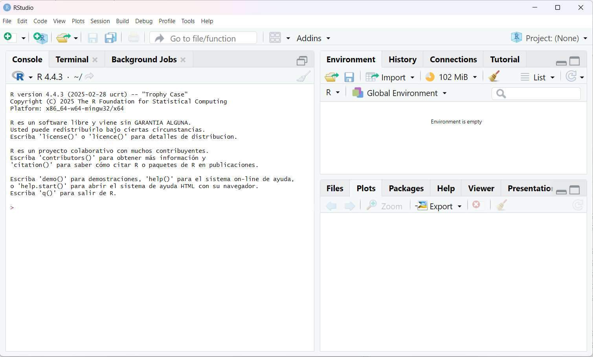
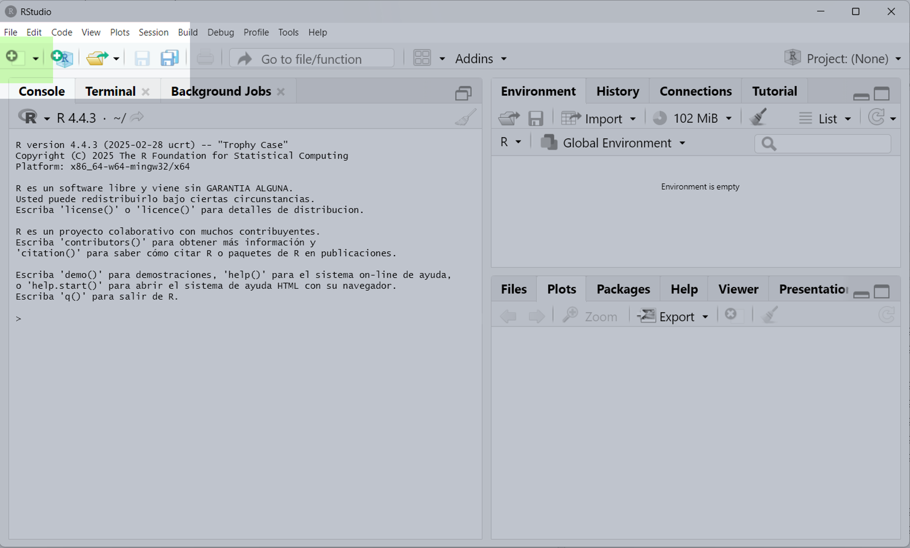

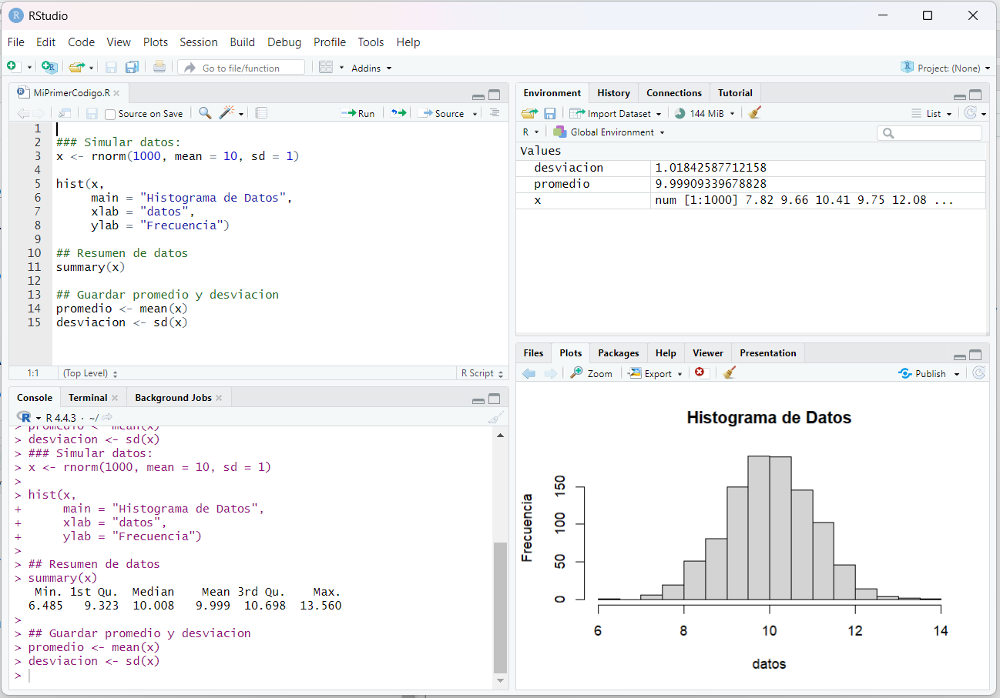

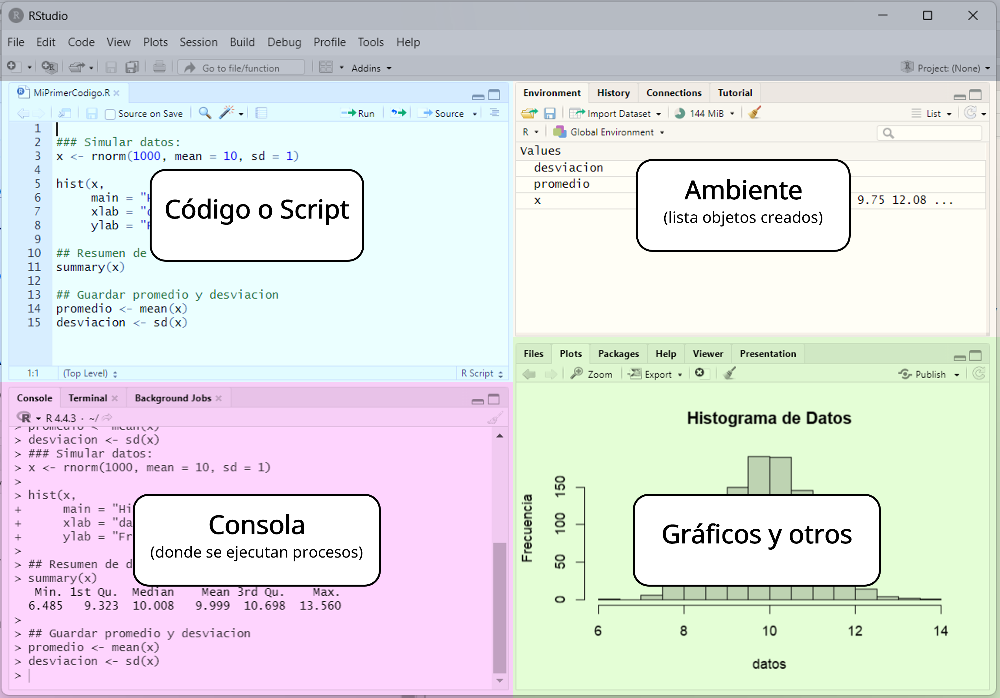
¡Actividad Bonificada!
- Instale R y R Studio.
- Desde R Studio, crear un nuevo código y guardarlo bajo algún nombre en alguna carpeta.
- Dentro del código creado, escriba comentarios anteponiendo cada una con un símbolo #.
# !Esto es un comentario!
##### ¡Esto tambien es un comentario!
# Copiar desde el boton en la esqina superior derecha de este cuadro.- Escriba en el código lo que ha aprendido durante esta sesión y aquello que le causa curiosidad del curso.
- Guarde el archivo y subir a Actividad Bonificada 1 en la sección de Tareas de Canvas.
¿Cómo se aprende a programar en u otro lenguaje?
- Aprendiendo la sintaxis y el dialecto del lenguaje de programación.
- Familiarizándonos resolviendo tareas sencillas.
- Resolviendo problemas interesantes.
- ¡Equivocándonos mil y un veces!
Como ejecutar código en R
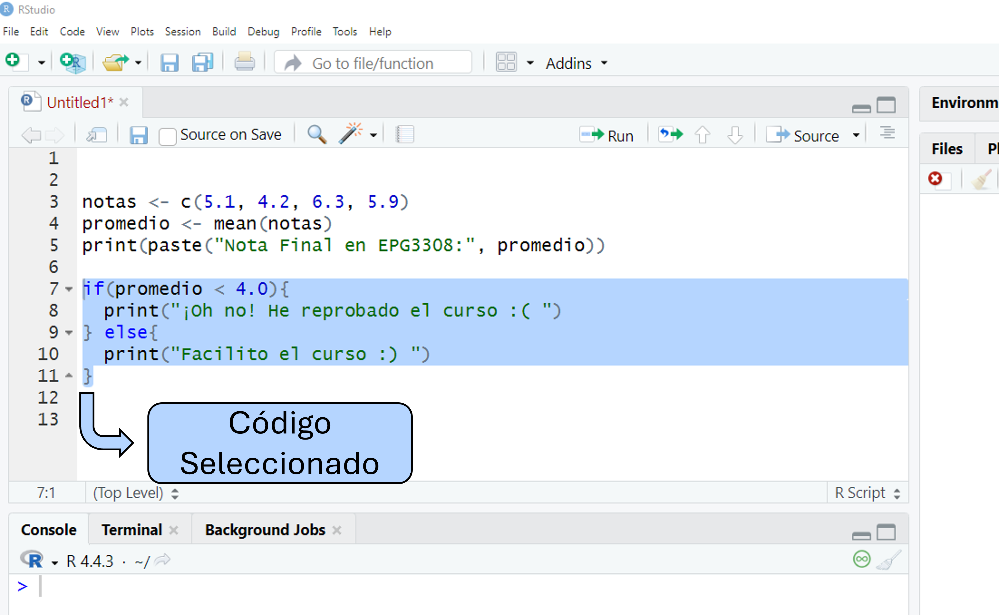
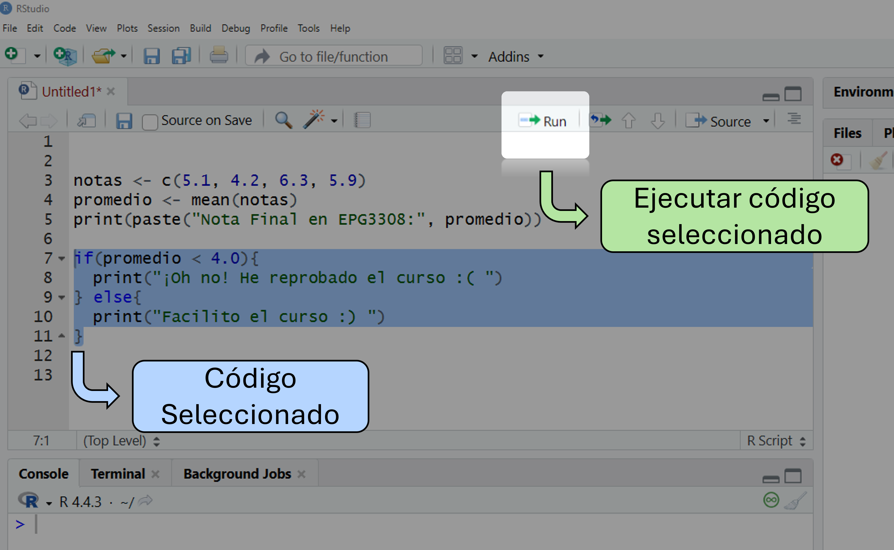
Atajo del Teclado: Control + Enter
R La Calculadora
R como Calculadora
Suma y Resta
R como Calculadora
Multiplicación y División
Potencias y Raíces
R como Calculadora
- El orden en que se aplican las operaciones sigue las reglas de la matemática.
- Usar paréntesis
()para agrupar sus operaciones y salir de duda.
- Usar paréntesis
- Orden:
- Paréntesis
- Exponenciación y raíces
- Multiplicación y división (de izquierda a derecha)
- Suma y resta
R como Calculadora
- El orden en que se aplican las operaciones sigue las reglas de la matemática.
- Usar paréntesis
()para agrupar sus operaciones y salir de duda.
- Usar paréntesis
R como Calculadora
- El orden en que se aplican las operaciones sigue las reglas de la matemática.
- Usar paréntesis
()para agrupar sus operaciones y salir de duda.
- Usar paréntesis
¡Actividad de Cinco Minutos!
- Transforme a grados Farenheit los 26 grados Celsius pronosticados para mañana.
\[F = 32 + C \times \frac{9}{5}\] 2. Si usted obtuvo un promedio de notas de laboratorios de \(3.5\), un promedio de tareas de \(4.2\), y un examen de \(4.5\), ¿aprueba el curso?
¡Actividad de Cinco Minutos!
- Sea \(p\) el puntaje obtenido en una evaluación que tiene \(p_{max}\) puntos como máximo. La nota que un estudiante obtiene bajo cualquier porcentaje de exigencia \(Ex\) se calcula como sigue:
Si se obtiene un puntaje \(p < E\cdot p_{max}\), \[\text{Nota} = 1 + 3\cdot\frac{1}{Ex}\cdot\frac{p}{p_{max}}.\]
Mientras que si se obtiene un puntaje \(p \geq E \cdot p_{max}\), \[\text{Nota} = 4 + 3\cdot\frac{p - Ex \cdot p_{max}}{p_{max}\cdot ( 1- Ex)}.\]
¿Qué nota obtuvo usted si obtuvo 25 puntos en una prueba de 30 puntos como máximo bajo una exigencia del 80%?
¡Actividad de Cinco Minutos!
- (para conocedores de funciones y condicionales) Construya una función que entregue la nota obtenida en una evaluación tras recibir como argumentos el puntaje obtenido, el puntaje total de la evaluación, y el porcentaje de exigencia.
- Explore las escalas de notas bajo el 50%, 60%, y 70%.
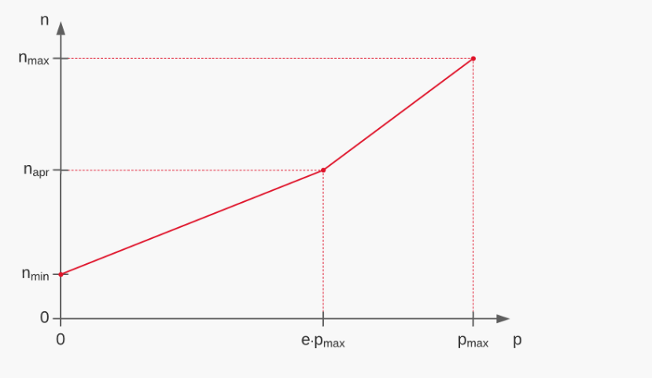 Fuente: J. Pumarino
Texto en R
Escribir e Imprimir Texto en Consola
Sintaxis para texto
- Todo carácter que deseen utilizarse como texto se escribe entre comillas dobles o entre comillas simples.
- Texto así no tiene mayor uso.
- Comunicar a un lector de código a través de comentario:
Impresión de texto en consola
- Función
cat(): concatena texto e imprime en la consola.catde concatena.
Error in parse(text = input): <text>:1:8: unexpected symbol
1: cat(No se
^- Notar que puede recibir una operación e imprime el resultado.
cat() es una función.
- Internamente ejecuta un procedimiento que puede depender o no de los elementos entregados por el usuario.
- Argumentos de una función: lo que debe recibir para que una función funcione.
Función print(x): si x es texto, (sólo) lo imprime. Si x es otro objeto, imprime los atributos definidos a ser impresos.
- Es menos flexible que
catpara manipular texto.
Función paste(x, y,...): pega los textos x y y separándolos por un espacio.
- Similar a
cat, perocatsólo imprime y devuelve texto impreso.
¡Actividad de Cinco Minutos!
- Usando
cat, concatene en una única frase el siguiente poema de Pablo Neruda:
Punto
No hay espacio más ancho que el dolor,
no hay universo como aquel que sangra.
- En un único
caty con todo el poema en un único texto, use\npara que al imprimir el poema en la consola se haga un salto de línea tras la coma del poema. Observe qué ocurre si usaprintpara imprimir el mismo texto.
¡Actividad de Cinco Minutos!
- En un único
caty con todo el poema en un único texto, use\npara que al imprimir el poema en la consola se haga un salto de línea tras cada salto incluido por el poeta.
Océano
Cuerpo más puro que una ola,
sal que lava la línea,
y el ave lúcida
volando sin raíces.
Creando Objetos en R
- Definir cantidades que puedan ser operadas posteriormente en el código.
- Sintaxis:
Nombre <- Elemento Almacenado como "Nombre"
[1] -25900- Objeto
FondosTotalesrecibió cambios (ficticios) y tiene nuevo valor.
*Se puede usar = en vez de <- pero puede llevar a confusiones.
- Definir objetos mejora la legibilidad del código.
Sobre nombres:
No pueden tener espacios dentro del nombre. Ej:
mi objeto <- 5No pueden llevar ciertos carácteres especiales. Ej:
valor$ <- 5,valor& <- 5No pueden iniciar con un número. ej:
1objeto <- 5Se recomienda no usar palabras reservadas para otras funciones u otros objetos. Ej:
print <- 5
¡Nombres de los objetos son sensible a mayúsculas y otras puntuaciones!
Valor <- 1000
TEXTO <- "Esto es un texto!"
datos_2 <- mtcars # Tabla de Datos guardada en R.
lstas <- list()
secuencias <- c(10, 400, 200, 500)
print(valor)Error: objeto 'valor' no encontradoError: objeto 'texto' no encontradoError: objeto 'datos2' no encontradoError: objeto 'listas' no encontradoError: objeto 'secuencia' no encontradoBuenas prácticas para asignación de nombres
- Usar nombres descriptivos.
- Usar patrones coherentes en el código.
- Añadir contexto si hace falta.
Funciones en R
Funciones: bloque de código que posee un nombre asignado y realiza una tarea específica.
- Es reutilizable.
- Usualmente recibe de entrada elementos que definen el proceso a realizar.
- Los Argumentos de la función son estos objetos.
- Puede o no entregar un objeto de salida.

Sintaxis para crear funciones
Sintaxis para crear funciones
NombreFuncion <- function(Argumento1, Argumento2, ...){
## No dar ningun argumento tambien es opcion.
## Aqui dentro se escriben todo el procedimiento
## que se desea ejecutar cuando NombreFuncion es llamada.
## Si se desea que la funcion retorne un
## objeto tras su ejecucion:
return(Objeto)
## Tambien es opcion que no entregue nada.
}Considere la función
Funcion(Argumento, X_Y, Z).Suponga, para este caso, que para que la función funcione, los tres argumentos deben recibir valores numéricos.
Cualquiera de las siguientes opciones son sintaxis válidas en R:
Ejemplos:
Ejemplos:
- Función que transforma grados Celsius a Farenheit.
[1] "0 grados Celsius son 32 grados Farenheit."[1] "30 grados Celsius son 86 grados Farenheit."[1] "100 grados Celsius son 212 grados Farenheit."[1] "220 grados Celsius son 428 grados Farenheit."Ejemplos:
- Funcion que calcula el promedio entre los cuatro laboratorios de este curso.
¡Actividad Bonificada!
Construya una función que reciba de argumentos las notas de la Tarea 1 y 2 y entregue como salida el mensaje Promedio de Laboratorios = NOTA OBTENIDA.
Construya una funcion que reciba de argumentos las notas de los laboratorios 1, 2, 3, y 4, las tareas 1 y 2, y el examen, y que calcule la nota final del curso. La nota final debe entregarla junto a un mensaje acorde.
Muestre evidencia de que realizó el resto de actividades de esta clase.
- Basta responder hasta aquí para haber completado la actividad bonificada.
Continúa….
¡Actividad Bonificada!
Escriba una función que tome como argumentos una nota y un porcentaje de exigencia, y que devuelva la nota ajustada a un nuevo porcentaje de exigencia, asumiendo que la nota original corresponde a un 50% de exigencia.
Escriba una función que reciba tantos argumentos como evaluaciones haya en el curso, además de un porcentaje de exigencia. La función deberá recalcular la nota final del curso ajustándola al porcentaje de exigencia indicado, asumiendo que las evaluaciones originales corresponden a un 50% de exigencia.